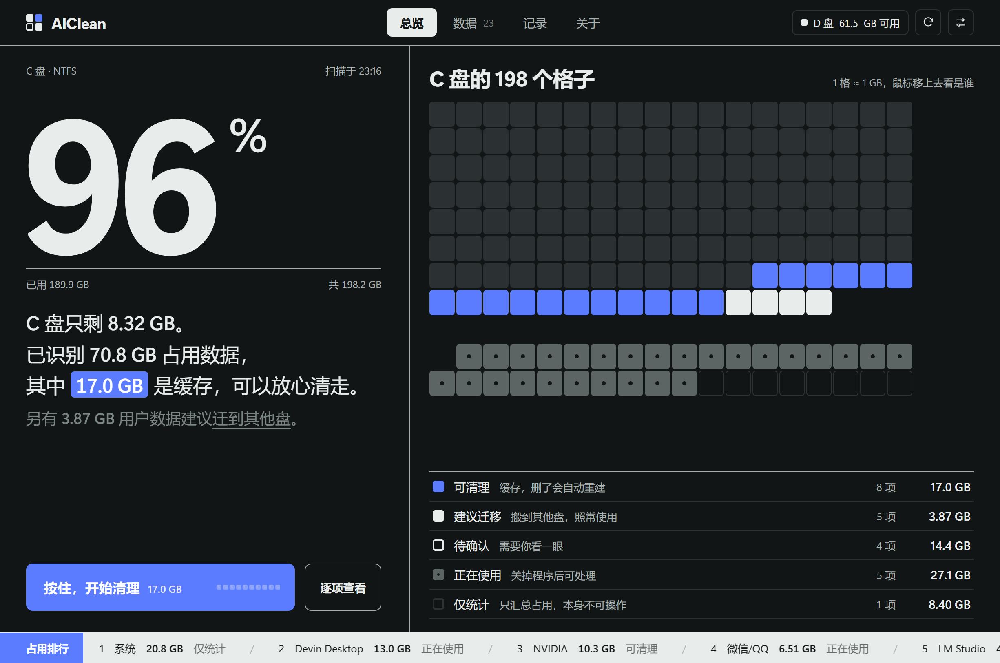

格子地图Grid map
整块盘画成一张图，一格约 1 GB。指针停在任意一格，即显示其归属软件与占用大小。The whole drive as one map, about 1 GB per cell. Hover any cell to see what owns it and how much it takes.
AIClean · Windows C 盘清理工具AIClean · Windows C: drive cleaner
扫描整盘占用，画成 198 个格子。缓存按住清理；各家 AI 应用的对话记录、模型文件，原路径迁往其他盘。Scans the whole drive and draws it as 198 cells. Hold to clean caches; AI chat history and model files migrate to another drive without changing their paths.

全盘扫描后画成 198 个格子，每一格是谁占的、占了多少，都有标注。The whole drive is drawn as 198 cells — every cell is labeled with what owns it and how much it takes.
缓存按住即清。清理前先查占用，不影响运行中的软件。Hold to clean caches. Locks are checked first, so running apps are never touched.
AI 应用的对话记录、模型文件等大文件夹迁往其他盘，原位保留链接，随时可迁回。Big AI folders — chat history, model files — migrate to another drive with a link left in place, reversible anytime.
AIClean 打开即扫描，扫描结果就画成这张图。
这台电脑腾出了 21.1 GB，可用空间从 8.32 GB 变成 29.4 GBThis machine freed 21.1 GB — free space went from 8.32 GB to 29.4 GB
清理前Before
清理后After
这台电脑腾出了 21.1 GB，可用空间从 8.32 GB 变成 29.4 GBThis machine freed 21.1 GB — free space went from 8.32 GB to 29.4 GB
整块盘画成一张图，一格约 1 GB。指针停在任意一格，即显示其归属软件与占用大小。The whole drive as one map, about 1 GB per cell. Hover any cell to see what owns it and how much it takes.
内置 335 条规则，覆盖各家 AI 应用、开发环境、常见软件缓存与注册表残留；未收录的 Electron 应用自动补查。300 MB 以上大文件单独列出，重复文件按指纹比对。335 built-in rules covering AI apps, dev toolchains, common software caches and registry leftovers; unknown Electron apps get heuristic scans. Files over 300 MB list separately, duplicates are matched by fingerprint.
AI 应用的对话记录、模型文件等大文件夹迁往其他盘，对软件而言路径始终不变。迁移分复制、校验、备份、建链接、验证五步，任何一步出错自动还原。Big AI folders move to another drive while apps keep seeing the same path. Migration runs five steps — copy, verify, backup, link, validate — and auto-rolls-back on any failure.
基于 Windows 计划任务，仅清理低风险缓存，周期自定。开启时会先弹窗列出将清理的内容。Runs on Windows Task Scheduler, low-risk caches only, on your own cadence. Enabling it shows exactly what will be cleaned first.
暂时无法删除的文件先进入残留区，可重试、可恢复，逾期自动清除。每一次操作均写入日志。Items that can't be deleted go to a quarantine area — retryable, restorable, auto-purged when overdue. Every operation is logged.
卸载时一并移除自身创建的内容。选择保留的数据会在桌面生成清单，标明存放位置。Uninstalling removes everything the app itself created. Anything you keep gets a manifest on your desktop with its location.
配色 1 / 3Theme 1 / 3
雾白Fog
明亮的日间主题，长时间使用不刺眼。A bright daytime theme that stays easy on the eyes.

配色 2 / 3Theme 2 / 3
克莱因蓝Klein blue
整屏深蓝底，重点信息以荧光黄标出。Deep blue page with fluorescent yellow accents.

配色 3 / 3Theme 3 / 3
夜墨Ink
适合夜间使用。本页右上角三个小方块可同步换色。Made for night use. The three squares top-right switch it live.
直接删除、清空回收站、删除迁移备份均不可恢复，按钮须按住数秒方生效，中途松手即取消。Irreversible actions — permanent delete, emptying the recycle bin, purging migration backups — require holding the button for a few seconds. Let go and it's cancelled.
删除与迁移之前先检测目标是否被程序占用，占用中的跳过，待程序关闭后再处理。Before deleting or migrating, it checks whether the target is in use by a running program — busy items are skipped until the app closes.
迁移分复制、校验、备份、建链接、验证五步，任一步失败均自动回退，原数据不受损。Migration runs in five steps — copy, verify, backup, link, validate. Any step failing rolls everything back; your data is untouched.
删除迁移备份前，先确认链接指向正确、目标数据完整，任一校验不通过则不执行。Before a migration backup can be purged, the link target and data integrity are verified first — no check, no delete.
首次运行会先弹出使用说明，明确列出不可恢复的操作，阅读后再开始使用。The first launch shows a usage guide that calls out every irreversible operation before you start.
可操作范围仅限当次扫描出的目录，过程中不会临时增加其他路径。Actions are limited to what the current scan found — nothing outside that list is ever touched.
也可以直接前往 Releases 页面 下载。Or grab it from the Releases page.
AIClean.exeWindows 10/11 64 位Windows 10/11 64-bit需要管理员权限时会提示Prompts when admin is needed